茶寮で楽しむ冬の美食と建築美が
織りなす和のおもてなし
- 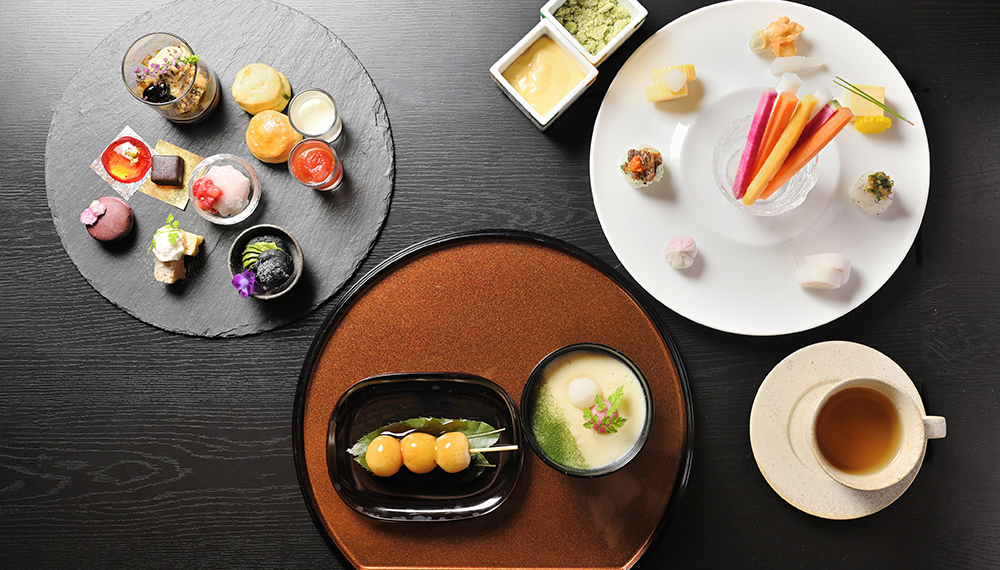
- 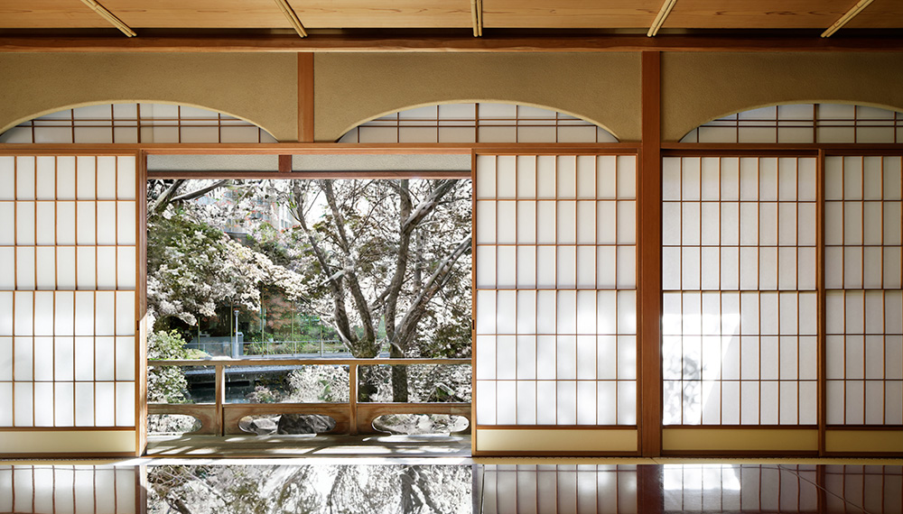
- 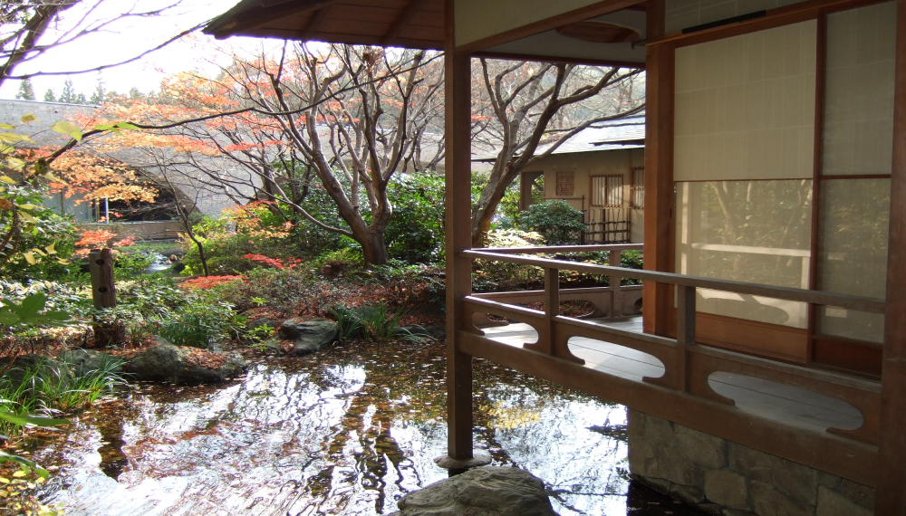
普段は立ち入ることのできない数寄屋造りの「茶寮」で楽しむ和のアフタヌーンティー。日本現代建築の巨匠・村野 藤吾氏 最晩年の意匠に込められた想いや歴史を知ることができます。呈茶サービスとともにホテルコンシェルジュが「茶寮」で楽しむポイントを丁寧に解説いたします。
茶寮で楽しむお香の鑑賞「聞香」と
和のアフタヌーンティー
- 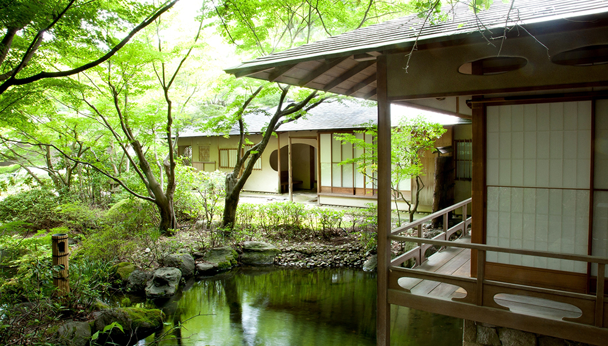
- 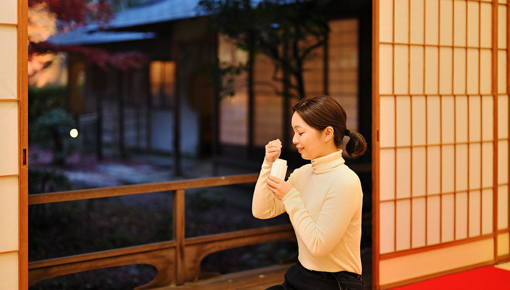
- 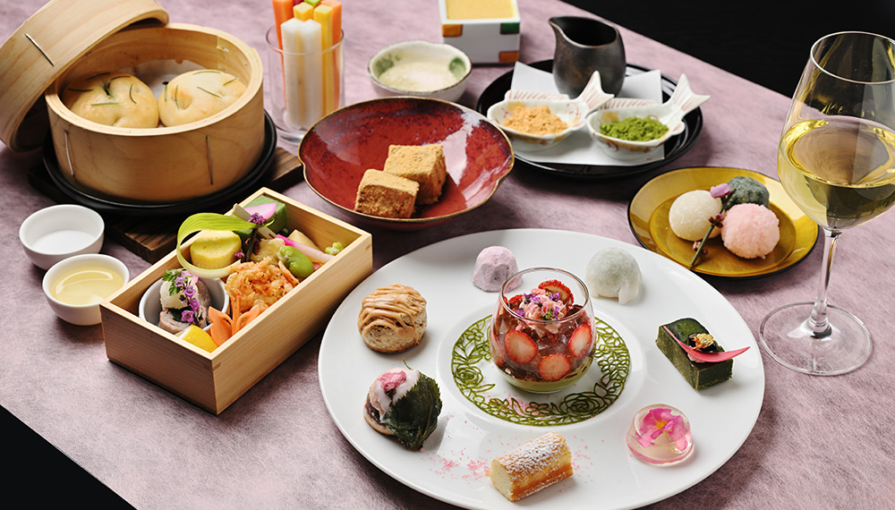
建築家・村野藤吾氏が遺した数奇屋造りの茶寮では、掌の香炉から立ち上る幽玄な香りを楽しむ「聞香」と京らしさを感じるの和のアフタヌーンティ―で香りを楽しむ春の贅沢なひと時をご用意いたします。喧騒を離れ、ゆったりと心癒される特別な体験をお楽しみください。
細部に宿る建築美で
旅をより特別に
- 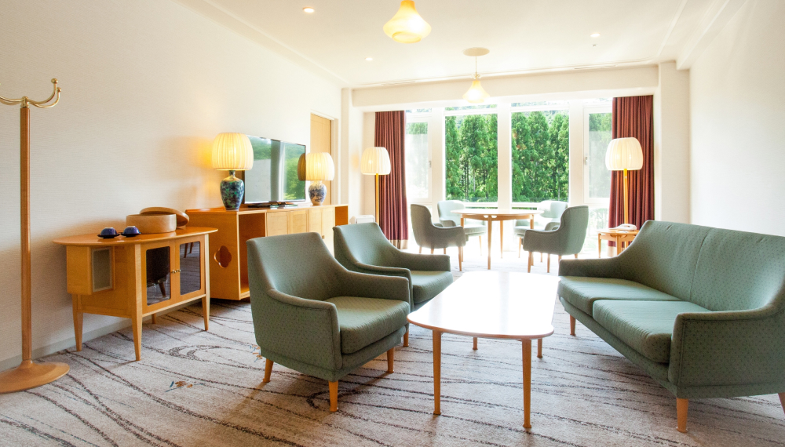
- 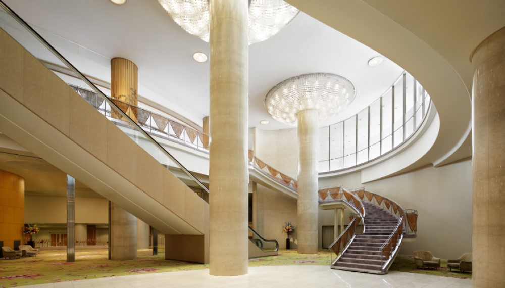
- 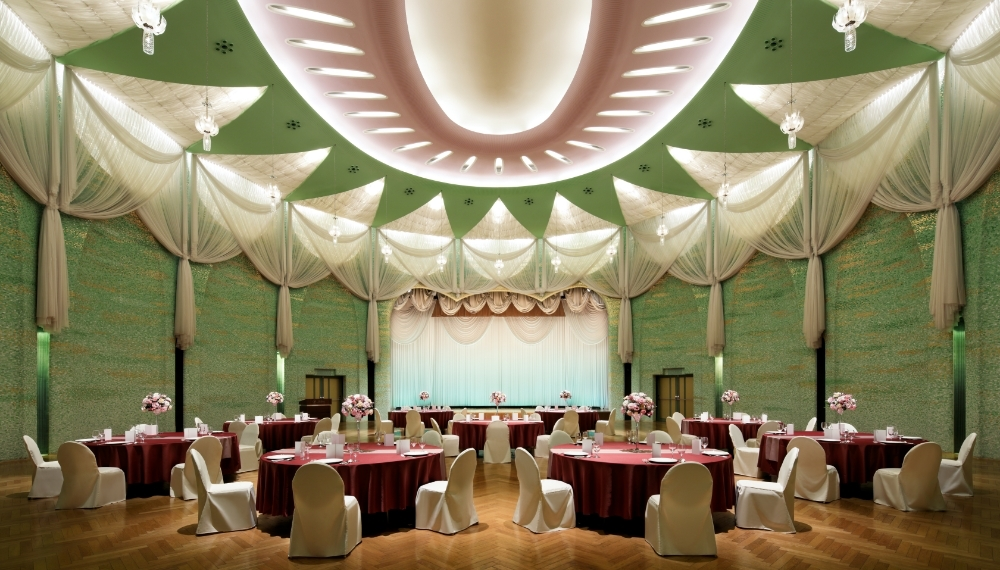
日本建築界の偉才と称された村野藤吾氏は、多大なる功績を残しました。特に彼の建築する階段には定評があり、ザ・プリンス 京都宝ヶ池ロビーの1階〜地下2階までの吹き抜けは、芸術そのもの。晩年の作品として、今もなお輝き続ける建築美は、ホテル内のそこかしこに。感動的な意匠をコンシェルジュが丁寧にご案内するホテルツアーも開催しています（不定期）。
心和ます京の奥座敷
- 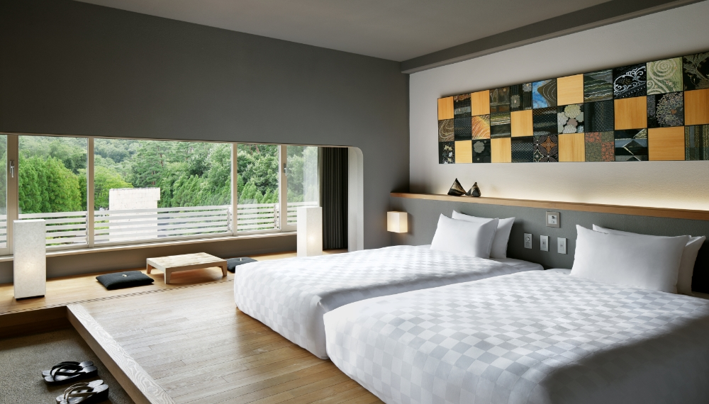
- 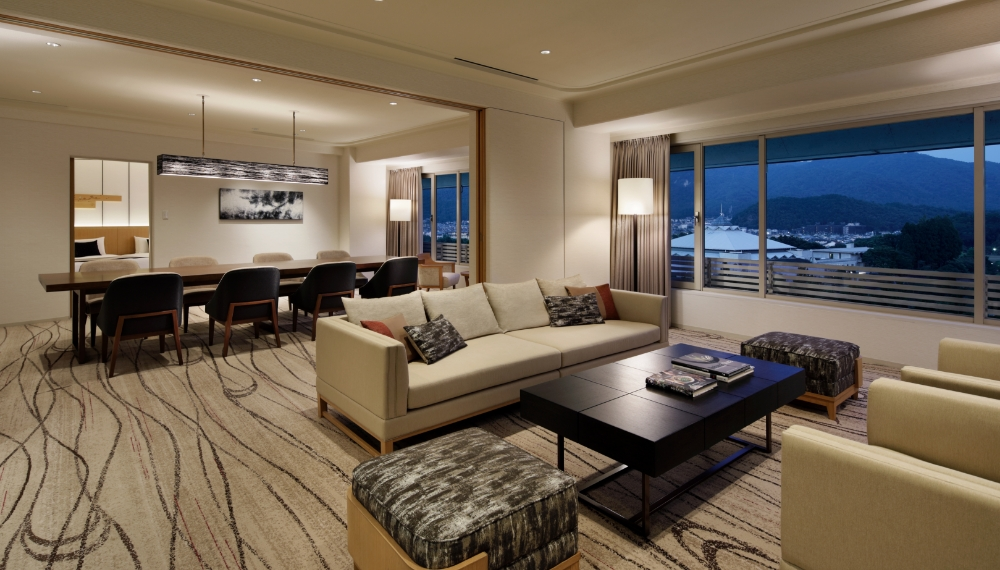
- 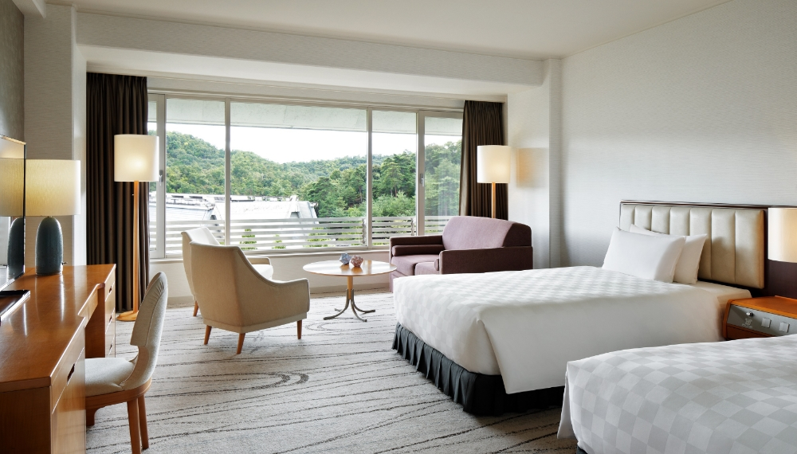
目の前に広がる自然を感じながら過ごせる、京の奥座敷でのご滞在。
四季折々に表情を変える景色もまた、心が落ちつくくつろぎの場所となります。
五感が満たされる
奥深い世界
数寄屋造りの名人が遺した茶寮は、至る所に繊細さを感じられる茶室として、心休まるひと時を提供。日本庭園から聞こえる瀧の音、障子に映り込む、水の流れる様子も風情あるお座敷です。